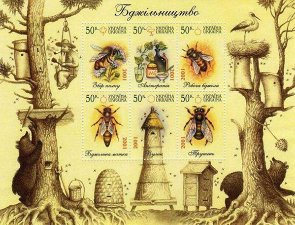
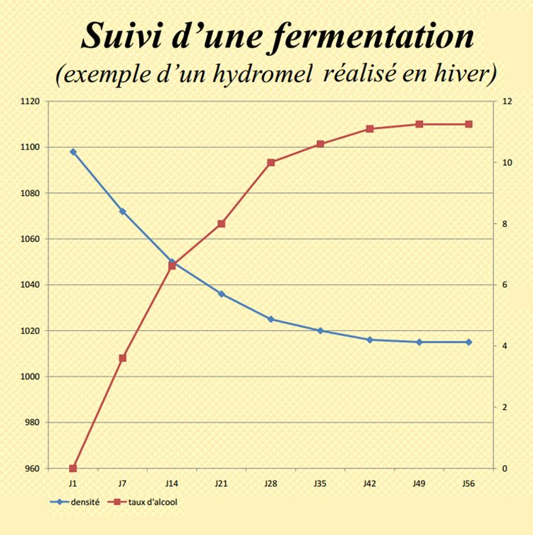
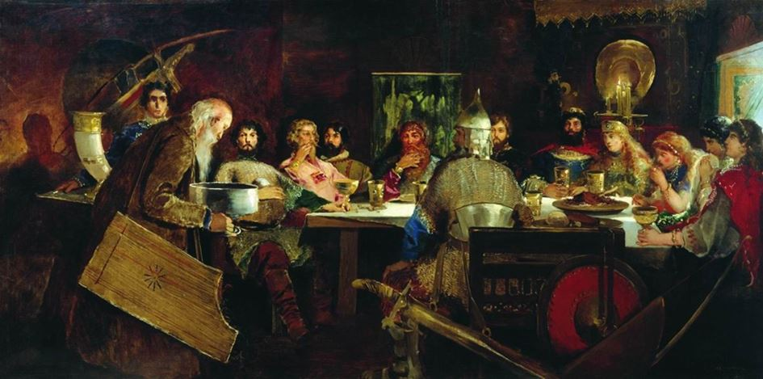

Les breuvages forts des cosaques ukrainiens, des paysans et des princes de la Russie kiévienne ont une longue histoire, et elle est apparentée à l’histoire des boissons en Europe. On peut citer la bière, la varenoukha, les liqueurs, mais surtout le roi des festins – l’hydromel. La tradition de boire ces boissons naturelles existait en Ukraine comme partout en Europe jusqu’au XIXe siècle où elles ont été tristement évincées par l’usage des boissons fabriquées à la chaîne.
L’hydromel même ou le « med », comme on dit en ukrainien (Mead chez Beowulf), n’existe pas sans son produit de base : le miel.
Les contrées slaves – de Novgorod à Kiev – pendant deux mille ans en étaient les plus grands exportateurs ; plus tard, les zaporogues ukrainiens, établis à demeure, ont développé jusqu’à la perfection l’art de l’apiculture et, avec lui, l’art de la préparation de l’hydromel. Ces mêmes zaporogues étaient les premiers exportateurs d’eau-de-vie pour le royaume de Moscou et pour les pays européens.
Les boissons à base de miel étaient déjà bien connues chez les Scythes qui les utilisaient mélangées avec des herbes pour guérir différentes maladies.
Les festins des princes de Kiev ne pouvaient pas se passer de l’hydromel ; cette boisson devait parfois reposer jusqu’à trente-cinq ans pour être digne d’un repas princier ! Nos ancêtres slaves offraient l’hydromel pour les repas sacrés pendant les noces et les cérémonies d’enterrements.
On retrouve des coutumes pareilles chez les Vikings et les autres peuples nordiques ; dans les passages de Beowulf jusqu’aux œuvres de Tolkien, si inspiré par la vieille tradition européenne de la tablée.

Tableau de Raibouchkine « Le festin des bogatyrs chez le gentil Prince Vladimir
L’hydromel est lié à la vie des cosaques comme la boisson la plus populaire et la plus délicieuse. On l’évoque dans les anciennes chansons héroïques ukrainiennes (par exemple – le célèbre chant sur le cosaque Bayda, vainqueur des Turcs) comme dans les récits nostalgiques de nos écrivains romantiques.
Citons Grigory Kvitka-Osnovyanenko et sa description inoubliable et gourmande d’une fête chez les nobles cosaques, pleine d’humour et de fierté nationale : « La table était garnie, à part les plats, de grandes cruches et parfois de grandes bouteilles pleines des bières et des hydromels de sortes et de goûts différents… Et quelles boissons c’étaient ! Je vous jure : aujourd’hui personne n’imaginera pas même en rêve le goût de ces breuvages, et pour les préparer ou les brasser – n’en parlons même pas ! Personne ne sait le faire !… Et l’hydromel ? Quel étonnement ! Vous le versez et il est pur et transparent comme un cristal, comme l’eau de source… Vous commencez à le goûter et après la troisième gorgée vous ne pouvez plus ouvrir vos lèvres – tellement il est doux et collant. Et quel arôme ! Aujourd’hui aucune grande dame ne porte un parfum pareil… Et que personne ne me raconte où se trouve maintenant la Russie. J’insiste et je souligne qu’elle est chez nous – dans la Petite Russie. Et voilà la preuve : quand les Russes étaient encore les Slaves, ils avaient de bons hydromels et ne buvaient que cela. Et si un peuple voulait goûter un peu d’hydromel, il venait chez les Slaves. En Grande Russie ils ne savent pas préparer des hydromels aussi bons que chez nous, en Petite Russie, donc – nous sommes des vrais slaves rebaptisés en Russes ! »
Ce texte gentiment chauvin était publié du temps des tsars ! Le secret de la préparation de cette boisson magique et rituelle a été bien oublié ou négligé parce que le processus est long, il exige beaucoup de travail et des produits chers en grande quantité – des kilogrammes de miel, le jus frais des baies de la forêt, le bois des arbres fruitiers, le four et les outils traditionnels. Et enfin – une patiente attente de 25-40 ans pour avoir la bonne maturité de la boisson.
Aujourd’hui, quelques amateurs parmi les Ukrainiens du Canada et des Européens essaient de faire renaître la tradition et peut-être qu’un jour on aura la joie de goûter ce breuvage des dieux qui ranime l’esprit et réveille l’âme !
Partager cette page